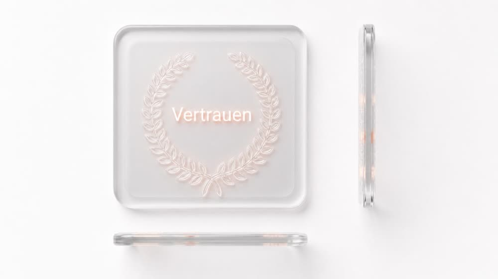
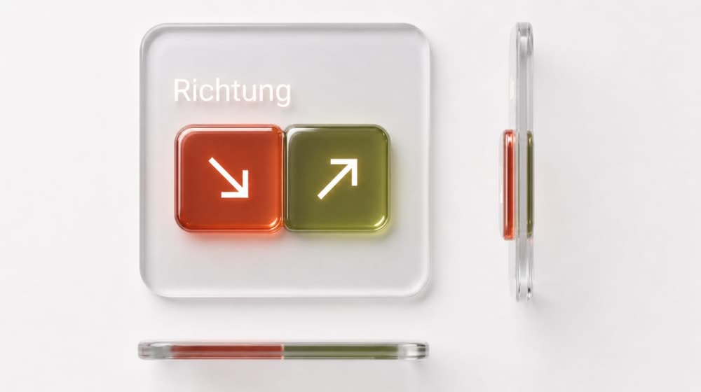
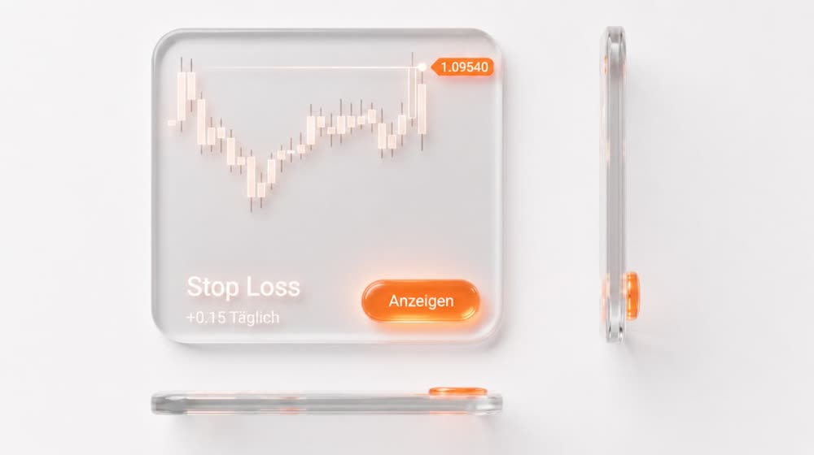
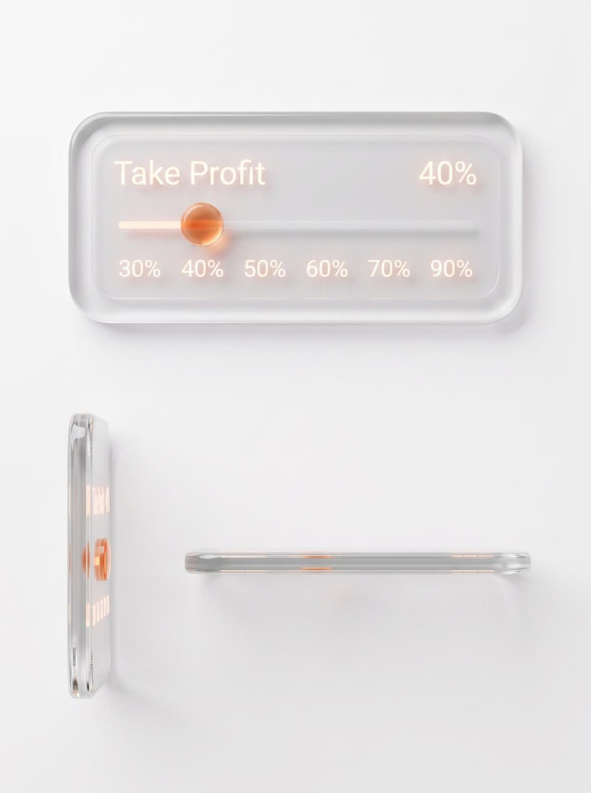
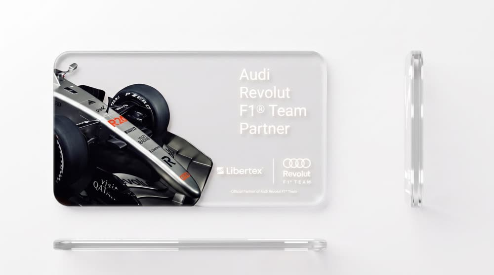
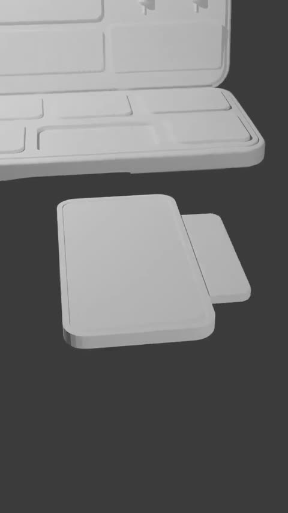
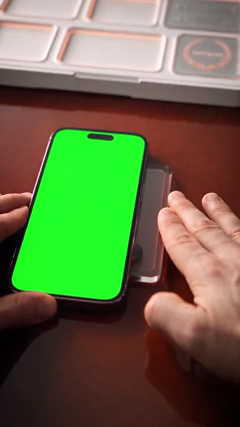
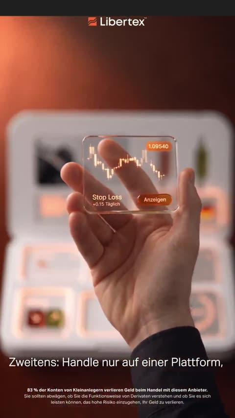
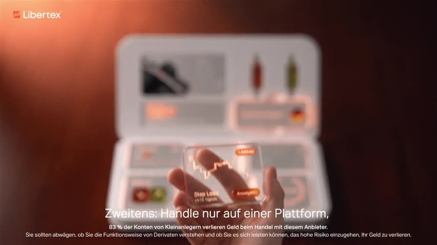

FIRST TRADE KIT
Продуктовый ролик в стиле ASMR: инструменты первой сделки стали предметами, которые можно взять в руки.
Что я придумал
От арт-директора пришло направление: коробка как пластик от iPod, предметы внутри стеклянные, всё в стиле ASMR. Готового дизайна не было, поэтому набор и каждый предмет в нём я придумал сам и довёл до утверждения. Ракурсы, движение камеры и ритм ролика тоже мои.
Что я делал
Собрал ролик один, от пустого листа до сдачи за 5–6 рабочих дней: дизайн набора, блокаут в Blender, генерация, интерфейс и композ в After Effects, звук и монтаж. Голос записывал в ElevenLabs по одной фразе и сводил на монтаже, чтобы полушёпот звучал ровно на всём ролике.
Что получилось
После сдачи ролик прошёл внешнее тестирование креатива и получил хорошую оценку: он привлекает и удерживает зрителя.
Что использовал
- Blender
- After Effects
- Nano Banana
- Seedance
- ElevenLabs
Предметы набора
Каждую стеклянную плашку я придумал и сгенерировал отдельно, в трёх проекциях, чтобы в кадре она оставалась одинаковой с любого ракурса.




Как это сделано
Камера и тайминг сначала решаются в 3D. Сгенерированные кадры следуют плану, а не наоборот.
01 · BLENDERБлокаутСерые болванки фиксируют траекторию камеры, кадрирование и темп каждого кадра.
02 · AI-ГЕНЕРАЦИЯМатериалСначала стиллы, потом видео по блокауту. Экран телефона остаётся чисто зелёным под кеинг.
03 · AFTER EFFECTSИнтерфейсТрекинг экрана, кеинг и анимированный торговый интерфейс, вкомпоженный в телефон.
04 · ФИНАЛЗвук и версииASMR-звук, озвучка на английском и немецком, юридические строки под каждый рынок.
Блокаут и результат
Слева движение, собранное в Blender. Справа то, что по нему сгенерировал Seedance. Все кадры генерировались с зелёным экраном телефона: трекинг, доработка и анимация интерфейса сделаны в After Effects.Работа в рамках правил
Регулируемый рынок задаёт рамку: в немецкой версии нет криптовалют, в каждой версии есть предупреждение о рисках и строка регулятора.